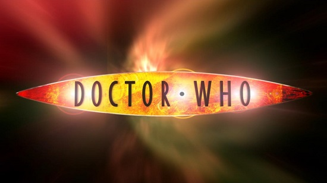

David Tennant

Christmas Special (2005)
The Christmas Invasion
Series 2 (2006)
New Earth
Tooth and Claw
School Reunion
The Girl in the Fireplace
Rise of the Cybermen
The Age of Steel
The Idiot's Lantern
The Impossible Planet
The Satan Pit
Love & Monsters
Fear Her
Army of Ghosts
Doomsday
Christmas Special (2006)
The Runaway Bride
Series 3 (2007)
Smith and Jones
The Shakespeare Code
Gridlock
Daleks in Manhattan
Evolution of the Daleks
The Lazarus Experiment
42
Human Nature
The Family of Blood
Blink
Utopia
The Sound of Drums
Last of the Time Lords
Christmas Special (2007)
Voyage of the Damned
Series 4 (2008)
Partners in Crime
The Fires of Pompeii
Planet of the Ood
The Sontaran Stratagem
The Poison Sky
The Doctor's Daughter
The Unicorn and the Wasp
Silence in the Library
Forest of the Dead
Midnight
Turn Left
The Stolen Earth
Journey's End
Specials (2008–2010)
The Next Doctor
Planet of the Dead
The Waters of Mars
The End of Time – Part One
The End of Time – Part Two
Previous
Next
William Hartnell
Patrick Troughton
Jon Pertwee
Tom Baker
Peter Davison
Colin Baker
Sylvester McCoy
Paul McGann
Christopher Eccleston
David Tennant
Matt Smith
Peter Capaldi
Jodie Whittaker
David Tennant
Ncuti Gatwa